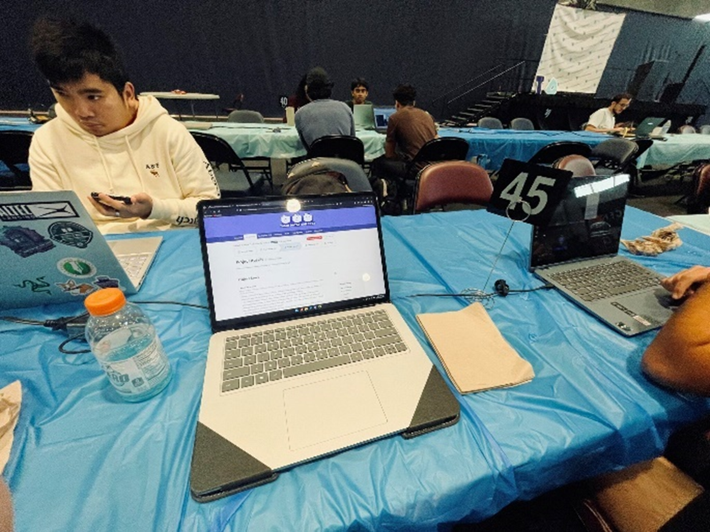
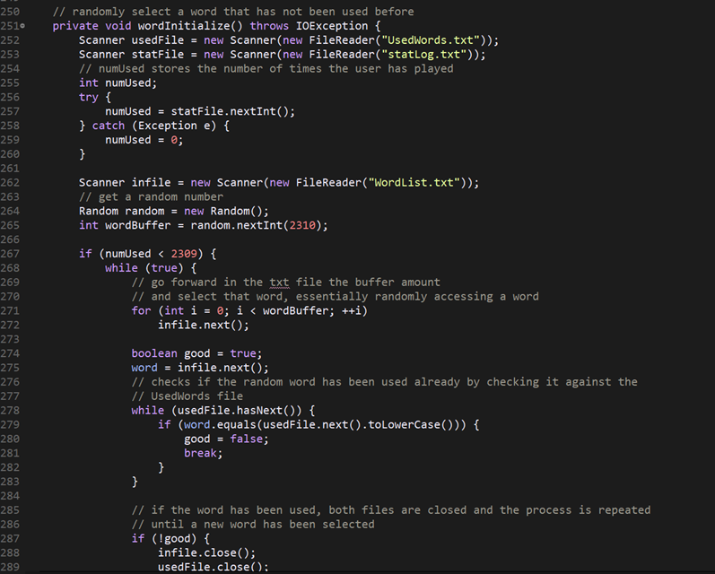
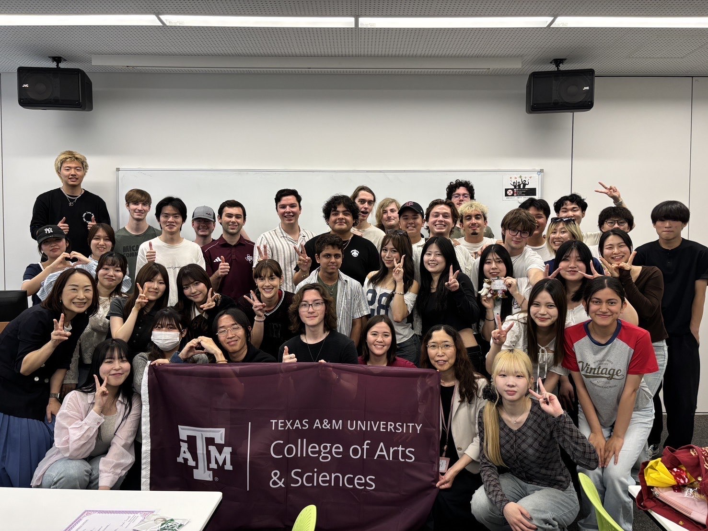
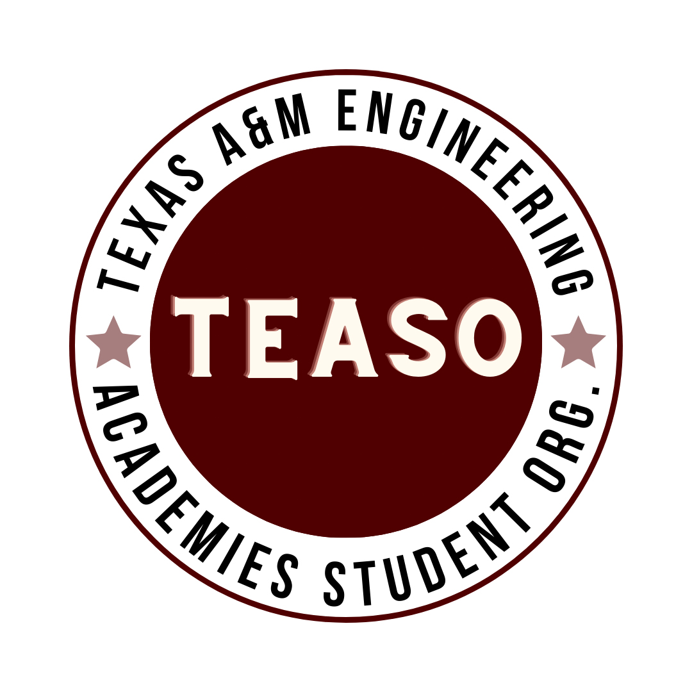

Resume
If your browser cannot display PDFs inline, open the resume in a new tab.
Technical Skills
Programming Languages
Proficient in Python, C, C++, and Java, with some experience in web development using HTML, CSS, and JavaScript. Developed various projects, including a Discord bot and a Wordle game, demonstrating strong coding and problem-solving abilities.
Tools & Technologies
Experienced with Unix/Linux environments, Git for version control, and microcomputers like Raspberry Pi. Utilized Google Spreadsheets API for automation and data handling in projects, showcasing adaptability to different technologies.
Data Handling & AI
Exposed to data processing and analysis using Python. Participated in the 2023 TAMU Datathon, where I cleaned and processed data, used recursive feature elimination, and trained a Keras Sequential Model to predict patient survival, highlighting my ability to work with complex datasets and machine learning models.
Project Management & Communication
Led the development of an automated verification system for TEASO, improving efficiency. Managed communications and collaborated with the treasurer to streamline processes. Provided guidance to new students, showcasing strong project management and communication skills.
Interests
Software Engineering
I'm interested in software engineering because it gives me the opportunity to develop practical solutions to real-world problems. I enjoy every stage of the development process, from designing and implementing an idea to testing and refining it. Seeing something I've built come together and work as intended is incredibly rewarding. Knowing that my applications can make someone's work, or even everyday tasks, a little easier is what makes software development especially meaningful to me.


Game Development
Game development fascinates me because it combines creativity with technical problem-solving. I enjoy taking the programming concepts I learn and applying them to something interactive and visually engaging. From designing gameplay mechanics and creating visuals to implementing the underlying game logic, every aspect presents its own challenges. I often find myself wanting to add more features and experiment with new ideas than I originally planned. That constant desire to build, improve, and explore new possibilities is a big part of what makes game development so enjoyable to me.
Japanese
My interest in Japanese language and culture has grown throughout the two years I've spent studying the language. One of the best experiences I got to have throughout my whole time in university was the opportunity to study abroad in Japan. I got to truly experience everyday life in a different culture and put my language skills into practice. Beyond improving my Japanese, the experience pushed me outside my comfort zone by encouraging me to communicate with new people every day (even more difficult when doing so in a language that wasn't my own 😂). I also made many lasting friendships that made the experience especially meaningful. My time in Japan strengthened my appreciation for the language and culture, and I plan to continue teaching myself Japanese long after graduating.

Extracurricular Activities
TEASO Officer/Ambassador
As an officer of the Texas Engineering Academies Student Organization (TEASO), I took responsibility for managing and improving the organization's Discord community. I worked to make the server more organized and accessible by redesigning its layout, introducing an onboarding process for new members, and simplifying access to academy-specific channels and announcements. I also developed tools to automate membership verification and keep students informed about upcoming university events, reducing the administrative work required of other officers.
As an ambassador, I served as a primary point of contact for students interested in transitioning from the Engineering Academies to Texas A&M's main campus. Through virtual information sessions and in-person events, I answered questions, shared my experiences, and helped students better understand the transition process. I also provided ongoing support through Discord, helping students navigate the organization and find the information they needed.

Peer Mentoring
Throughout college, I informally tutored friends whenever they needed help with their coursework, primarily in computer science. I helped explain concepts in data structures, computer organization, and game development logic, as well as assisted with debugging and understanding programming errors.
Rather than simply providing solutions, I encouraged them to work through problems independently while offering guidance and suggesting alternative approaches when appropriate. Since some of my friends attended different universities and worked with programming languages I was less familiar with, I also learned to adapt my explanations and focus on the underlying concepts rather than specific implementations.
University Interscholastic League (UIL)
During my senior year of high school, I competed in the University Interscholastic League (UIL) as a member of both the Computer Science and Calculator Applications teams. After demonstrating an aptitude for programming in my first Java course, my teacher encouraged me to join the Computer Science team. That year, our team placed first in our region and second in the state, while I individually placed 13th statewide.
I also competed in Calculator Applications, where I placed first in my district and fifth in my region. Although I narrowly missed qualifying for the state competition, the experience challenged me to strengthen my mathematical and problem-solving skills. Competing in UIL was an especially rewarding experience that helped develop my interest in programming and reinforced my enjoyment of challenging technical problems.